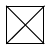
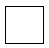
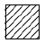
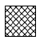
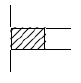
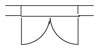

플라스틱창호기능사 (2006-10-01 기출문제)
1과목: 건축일반
1. 다음의 재료 표시기호에서 목재의 구조재 표시 기호는?




(정답률: 86%)

2. 철근 콘크리트조에서 철근에 대한 콘크리트의 역할이 아닌 것은?
- 콘크리트는 알칼리성이기 때문에 철근이 녹슬지 않는다.
- 콘크리트와 철근이 강력히 부착되면 철근의 좌굴이 방지된다.
- 화재시 철근을 열로부터 보호한다.
- 철근의 인장력을 크게 증가시킨다.
(정답률: 75%)
3. 다음 치장 줄눈의 이름은?

- 민줄눈
- 평줄눈
- 오늬줄눈
- 맞댄줄눈
(정답률: 72%)
4. 중심선, 절단선, 기준선으로 사용되는 선의 종류는?
- 2점쇄선
- 1점쇄선
- 파선
- 실선
(정답률: 78%)
5. 건축제도에 사용하는 글자에 대한 설명 중 옳지 않은 것은?
- 글자는 명백히 쓴다.
- 문장은 왼쪽부터 가로쓰기를 원칙으로 한다.
- 글자의 크기는 각 도면의 상황에 맞추어 알아보기 쉬운 크기로 한다.
- 글자체는 수직 또는 30° 경사의 고딕체로 쓰는 것을 원칙으로 한다.
(정답률: 86%)
6. 보통 점토벽돌의 품질시험에서 가장 중요한 사항은?
- 흡수율 및 전단강도
- 흡수율 및 압축강도
- 흡수율 및 휨강도
- 흡수율 및 인장강도
(정답률: 77%)
7. 벽돌구조의 아치에 대한 설명으로 적당하지 않은 것은?
- 아치는 수직 압력을 분산하여 부재의 하부에 인장력이 생기지 않도록 한 구조이다.
- 창문의 너비가 1m 정도일 때 평아치로 할수 있다.
- 문꼴 나비가 1.8m 이상으로 집중하중이 생길 때에는 인방보로 보강한다.
- 본아치는 보통 벽돌을 사용하여 줄눈을 쐐기 모양으로 만든 것이다.
(정답률: 70%)
8. 철근콘크리트보에서 늑근을 사용하는 가장 중요한 이유는?
- 주근의 위치 보존
- 휨모멘트 보강
- 축방향력 증대
- 전단력에 의한 균열방지
(정답률: 72%)
9. 목재의 접합에서 좁은 폭의 널을 옆으로 붙여 그 폭을 넓게 하는 것으로 마루널이나 양판문의 양판제작에 사용되는 것은?
- 쪽매
- 산지
- 맞춤
- 이음
(정답률: 74%)
10. 치수표기에 관한 설명 중 옳지 않은 것은?
- 보는 사람의 입장에서 명확한 치수를 기입한다.
- 필요한 치수의 기재가 누락되는 일이 없도록 한다.
- 치수는 특별히 명시하지 않는 한 마무리 치수로 표시한다.
- 치수는 치수선을 중단하고 선의 중앙에 기입하여서는 안 된다.
(정답률: 86%)
11. 단면도에 표기하여야 할 사항으로 틀린 것은?
- 처마 높이
- 창대 높이
- 지붕 물매
- 도로 높이
(정답률: 75%)
12. 다음의 제도용지 크기 중에서 A1에 해당되는 치수로옳은 것은? (단위:mm)
- 841×1189
- 594×841
- 420×594
- 297×420
(정답률: 82%)
13. 건축물의 구성 요소 중 건물의 수평체로서 그 위에 실리는 하중을 받아 이것을 기둥 또는 벽에 전달하는 것은?
- 벽
- 바닥
- 기초
- 계단
(정답률: 65%)
14. 벽돌 구조에 대한 설명 중 옳지 않은 것은?
- 내구, 내화적이다.
- 방한, 방서에 유리한다.
- 구조 및 시공이 용이하다.
- 지진, 바람 등의 횡력에 강하다.
(정답률: 90%)
15. 셀(sell) 구조에 대한 설명으로 옳지 않은 것은?
- 큰 공간을 덮는 지붕에 사용되고 있다.
- 가볍고 강성이 우수한 구조 시스템이다.
- 상암동 월드컵 경기장이 대표적이 셀(sell)구조물이다.
- 면에 분포되는 하중을 인장과 압축과 같은 면내력으로 전달시키는 역학적 특성을 가지고 있다.
(정답률: 78%)
16. 벽돌 쌓기법 중 벽의 모서리나 끝에 반절이나 이오토막을 사용하는 것으로 가장 튼튼한 쌓기법은?
- 미국식 쌓기
- 프랑스식 쌓기
- 영식 쌓기
- 네덜란드식 쌓기
(정답률: 92%)
17. 건축구조의 구성방식에 의한 분류에 속하지 않는것은?
- 조적식 구조
- 철근콘크리트 구조
- 가구식 구조
- 일체식 구조
(정답률: 78%)
18. 목조벽체를 수평력에 견디게 하고 안정한 구조로 하기 위해 사용되는 부재는?
- 인장
- 기둥
- 가새
- 토대
(정답률: 73%)
19. 건축 구조의 특성으로 옳지 않은 것은?
- 목구조는 시공이 용이하며 외관이 미려, 경쾌하나 내구성이 부족하다.
- 블록구조는 외관이 장중하고, 횡력에 강하나 내화성이 부족하다.
- 철근콘크리트구조는 내진, 내화, 내구성이 우수하나 중량이 무겁고 공기가 길다.
- 철골구조는 고층 및 대건축에 적합하나 내화성이 부족하고 공사비가 고가이다.
(정답률: 71%)
20. 납작마루에 대한 설명으로 맞는 것은?
- 콘크리트 슬래브 위에 바로 멍에를 걸거나 장선을 매어 마루를 짠다.
- 층도리 또는 기둥 위에 층보를 걸고 그 위에 장선을 걸친 다음 마룻널을 깐다.
- 호박돌 위에 동바리를 세운 다음 멍에를 걸고 장선을 걸치고 마룻널을 깐다.
- 큰보 위에 작은보를 걸고 그 위에 장선을 대고 마룻널을 깐다.
(정답률: 53%)
2과목: 플라스틱개론
21. 재해손실비 중 간접비에 해당 되지 않는 것은?
- 생산손실
- 시간손실
- 시설물자손실
- 유족보상비
(정답률: 83%)
22. 하인리히의 재해구성비율 1:29:300에서 300 이 의미하는 것은?
- 사망
- 중상
- 경상
- 무상해사고
(정답률: 86%)
23. 소음이 심한 환경에 노출시 나타나는 현상이 아닌것은?
- 혈압이 낮아진다.
- 맥박이 상승한다.
- 주의력이 산만해진다.
- 기억력이 감퇴한다.
(정답률: 87%)
24. 안전표지의 구성요소가 아닌 것은?
- 모양(형상)
- 색깔
- 내용
- 가격
(정답률: 92%)
25. 산업 재해조사표에 기록해야 할 주요 내용으로 틀린 것은?
- 재해발생 일시와 장소
- 조사자의 신상명세
- 재해의 원인과 결과
- 조사자의 의견
(정답률: 83%)
26. 100명의 근로자가 공장에서 1일 8시간, 연간 평균 근로일수를 300일이라고 하면, 연근로시간수는 24만 시간이 된다. 이 기간 안에 6건의 상해자를 냈을 때 도수율(빈도율)은 얼마인가?
- 6
- 8
- 24
- 25
(정답률: 61%)
27. 사고 예방의 원리 5단계가 바르게 나열된 것은?
- 조직-사실의 발견-시정책의 선정-평가분석-시 정책의 적용
- 조직-평가분석-사실의 발견-시정책의 선정-시 정책의 적용
- 조직-사실의 발견-평가분석-시정책의 선정-시 정책의 적용
- 조직-시정책의 선정-사실의 발견-평가분석-시 정책의 적용
(정답률: 74%)
28. 안전모의 성능기준으로 가장 거리가 먼 것은?
- 외관
- 내충격성
- 내열성
- 안정성
(정답률: 90%)
29. 안전조직 중 라인형 조직의 특성이 아닌 것은?
- 소규모 사업장에 적합하다.
- 전문적인 관리 업무가 용이하다.
- 사업장에 적합한 기술 축척이 어렵다.
- 강력한 명령 하달이 가능하다.
(정답률: 62%)
30. 작업 개선계획을 작성하기 위해서는 먼저 기본방향을 명확히 하지 않으면 안된다. 이 기본 방향과 거리가 가장 먼 것은?
- 편리를 위한 개선방향
- 생산성 향상 방향
- 쾌적한 작업환경 조성방향
- 재해사고의 감소방향
(정답률: 75%)
31. 응급구호표지, 들것, 비상구 등의 안내표지판 색깔은?
- 적색
- 노랑색
- 푸른색
- 녹색
(정답률: 79%)
32. 재해방지대책의 3E가 아닌 것은?
- 기술적 대책
- 환경적 대책
- 교육적 대책
- 단속적 대책
(정답률: 67%)
33. 작업자가 바닥에 미끄러지면서 상자에 머리를 부딪쳐 상처를 입었다. 이때 기인물은?
- 바닥
- 상자
- 머리
- 바닥과 상자
(정답률: 84%)
34. 산업재해의 원인 중 간접원인에 해당되는 것은?
- 작업기준의 불명확
- 복장, 보호구의 잘못 사용
- 기계, 기구의 잘못 사용
- 불완전한 자세, 동작
(정답률: 55%)
35. 하인리히 재해 연쇄 모형에 해당하지 않는 것은?
- 개인적 결함
- 사고
- 자연적 환경
- 불안전한 행동, 상태
(정답률: 64%)
36. 여러 가지 단면형 성형이 가능하고 봉, 파이프, 필름, 시트제작에 적당한 성형가공법은?
- 사출성형법
- 취입성형법
- 압출성형법
- 진공성형법
(정답률: 80%)
37. 유리 섬유 강화 플라스틱으로 욕조, 정화조, 주택관계기기, 보트, 선박, 안전창, 가구, 그 밖의 시설물등 광범위하게 사용되는 것은?
- FRP
- PET
- PVC
- PS
(정답률: 74%)
38. 요소수지의 설명으로 옳지 않은 것은?
- 내수성, 접착성이 우수하다.
- 내열성은 페놀보다 우수하다.
- 착색이 자유롭다.
- 전기저항은 페놀보다 약간 떨어진다.
(정답률: 64%)
39. 화장판, 벽판, 천장판, 카운터등에 쓰이며 무색 투명하여 착색이 자유롭고, 내열성, 강도, 내수성 등이 우수한 플라스틱의 종류는 무엇인가?
- 페놀수지
- 요소수지
- 멜라민수지
- 알키드수지
(정답률: 70%)
40. 공중용 변소, 전화실 출입문에 가장 적당한 철물은?
- 자유정첩
- 피봇 힌지
- 플로어 힌지
- 레버토리 힌지
(정답률: 62%)
3과목: 작업안전
41. 폴리스틸렌 타일에 관한 설명 중 틀린 것은?
- 성형원료를 사출성형하여 만든다.
- 점토타일보다 치수가 정확하다.
- 바탕에 접착이 잘 되는 장점이 있다.
- 신을 신고 보행하는 마루에 적당하다.
(정답률: 71%)
42. 플라스틱용 착색제가 갖추어야 할 조건으로 옳지 않은 것은?
- 내용제성, 내약품성일 것
- 대량으로 선명하게 착색할 것
- 분산성이 좋을 것
- 플라스틱의 분해를 촉진하지 않을 것
(정답률: 58%)
43. 창호의 개폐 방법 중 옆 벽 속에 밀어 넣는 형식을 갖는 것은?
- 여닫이 창호
- 미닫이 창호
- 미서기 창호
- 회전 창호
(정답률: 79%)
44. 다음 중 염화비닐(PVC)수지의 주요 용도가 아닌 것은?
- 수도용 파이프
- 전선용 파이프
- 플라스틱 창틀
- 온돌 파이프
(정답률: 73%)
45. 창호가 설치된 내,외부의 압력차에 의한 통기량을 측정한 기준을 나타내는 특성치는?
- 내풍압성
- 기밀성
- 수밀성
- 차음성
(정답률: 60%)
46. 아래 그림의 평면기호의 명칭으로 옳은 것은?

- 쌍여닫이문
- 쌍여닫이창
- 자재문
- 여닫이창
(정답률: 68%)
47. 창호에 대한 설명으로 틀린 것은?
- 평벽의 개구부에는 기밀성이 좋은 알루미늄제 창호가 일반적으로 많이 사용된다.
- 문의 밑틀은 문지방이라 하는데 그 두께는 4~6cm정도이다.
- 보통 실내에는 목재창을 실외에는 금속제 또는 합성수지계 창문을 사용하고 있다.
- 목재창호는 금속제에 비하여 내구성이 우수하고 기밀성이 크다.
(정답률: 77%)
48. 플라스틱 접착제에 대한 설명으로 바르지 못한 것은?
- 작업할 때에는 높은 온도는 피한다.
- 에멀션 접착제는 겨울철에도 동결의 위험이 적다.
- 여분의 접착제는 건조나 경화 전에 봉 등으로 제거한다.
- 용제형 접착제를 사용하는 경우는 인화하지 안도록 주의한다.
(정답률: 68%)
49. 창문과 창호 철물에 관한 기술 중 옳지 않은 것은?
- 무거운 대형 자재문의 경우에는 플로어 힌지를 부착한다.
- 자재문은 자유경첩을 달아 안팎을 자유로 여닫을 수 있게 KS 문이다.
- 접문의 도르래 철물은 크리센트를 설치한다.
- 미닫이 문의 경우에는 문을 완전히 개폐할 수있다.
(정답률: 67%)
50. 폴리아미드 수지의 내용으로 옳지 않은 것은?
- 내화학 약품성이 우수하다.
- 내마멸성이 높다.
- 내마멸용 성형품 등에 쓰인다.
- 항공기의 방풍유리에 사용된다.
(정답률: 73%)
51. 플라스틱 재료에 속하지 않는 것은?
- 셀룰로이드
- 베이클라이트
- 합성수지
- 돌로마이트
(정답률: 56%)
52. 플라스틱 코팅 중 파우더법에 대한 설명으로 틀린 것은?
- 유동 침지 코팅이라고도 한다.
- 재료는 폴리에틸렌, 나이론, 염화비닐 등의 고운 분말을 사용한다.
- 특히 연질품은 아름다운 광택을 낸다.
- 다른 코팅방법으로 할 수 없는 모양이 복잡한 것도 가능하다.
(정답률: 56%)
53. 다음 중 플라스틱에 유연성을 주기 위하여 첨가되는 것은?
- 경화제
- 가소제
- 염료
- 충전재
(정답률: 67%)
54. 다음은 블로 성형법에 대한 설명이다. 틀린 것은?
- 병 모양의 중공 성형품을 만들 수 있다.
- 소형 성품만 가능하다.
- 예리한 모서리의 성형은 곤란하다.
- 살 두께의 조절이 어렵다.
(정답률: 48%)
55. 출입문에 통풍, 기류를 방지하여 열손실을 최소화하고 출입인원을 조절할 목적으로 쓰이는 문은?
- 자재문
- 회전문
- 미서기문
- 여닫이문
(정답률: 84%)
56. 멜라민 수지에 대한 설명으로 옳지 않은 것은?
- 내용제성이 떨어진다.
- 내수성이 뛰어나다.
- 내열성이 우수하다.
- 무색투명하여 착생이 자유롭다.
(정답률: 62%)
57. 사출성형의 장점이 아닌 것은?
- 치수의 정밀도가 높고, 품질이 안정된 성형품을 얻을 수 있다.
- 살두께가 얇은 대형의 성형품에 적합하다.
- 성형과 동시에 양색, 곱슬 주름, 나무무늬, 그 밖의 표면 가식이 가능하다.
- 다량 생산할 경우에는 성형품의 가격 절감이 가능하다.
(정답률: 60%)
58. 다음 중 창호의 특성이 아닌 것은?
- 기능상 여닫이가 편리해야 한다.
- 풍우 등의 자연 현상이나 여닫을 때의 진동에 잘 견뎌야 한다.
- 뒤틀림이나 마모, 손상이 없어 내구적이어야 한다.
- 구성이나 모양이 건축물의 외관과 관계없이 기능과 내구성에 만족해야 한다.
(정답률: 83%)
59. 시멘트, 석면 등을 가하여 수지 시멘트로 사용할수 있는 것은?
- 염화비닐 수지
- 폴리에틸렌 수지
- 폴리프로필렌 수지
- 폴리스티렌 수지
(정답률: 54%)
60. 채광과 전망을 위하여 창문을 크게 낼 때 쓰이는 것으로 열 수 없도록 고정시킨 창은?
- 여닫이 창
- 미닫이 창
- 오르내리 창
- 붙박이 창
(정답률: 86%)